Here is the link for the user manual: https://drive.google.com/file/d/1hI0Zqg4FRirmJl4787b9BNiGCcxBfeX2/view?usp=sharing
Purchase Request module allows to manage the purchase request process of your company:
When a purchase request is completely approved, the purchase user will do his job by creating a purchase order to buy the items with the variety of ways:
Access the menu Purchases > Configuration > Setting and input the amount.
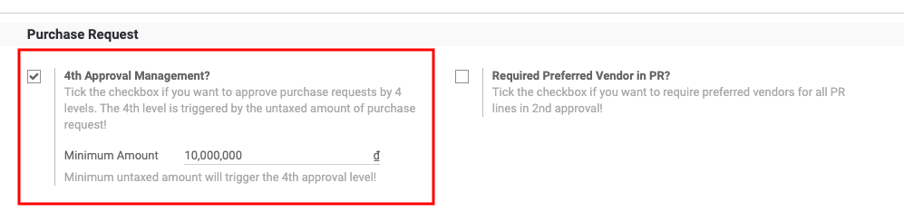
Module Purchase Request is designed with 3 main menus:
The list view of purchase requests shows off the overall status of purchase requests: Purchase Request status, Purchase Order Creation status, …
Additionally, the search view contains the useful filters like PR statues, PO creation status, or group by like, or searching fields by
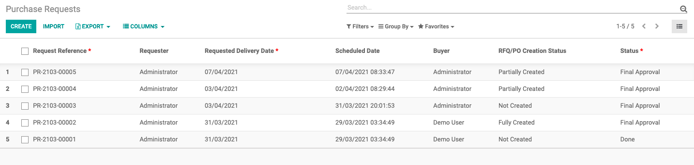
The form view contains all necessary information:
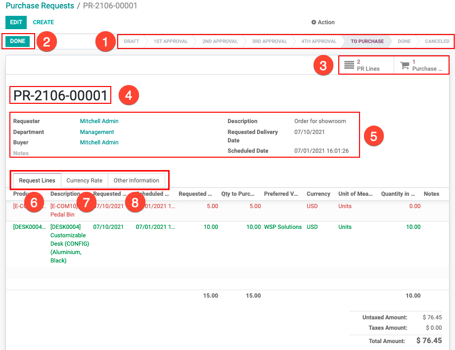
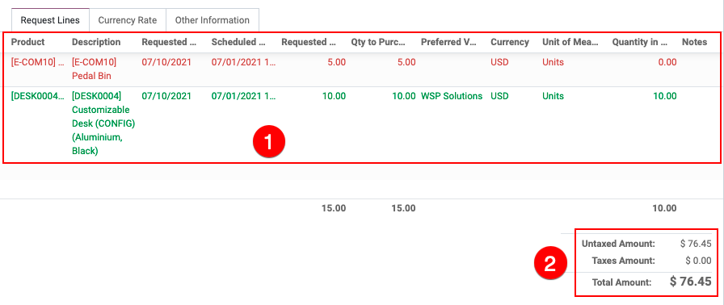
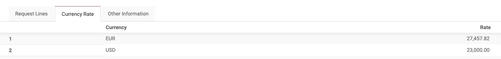
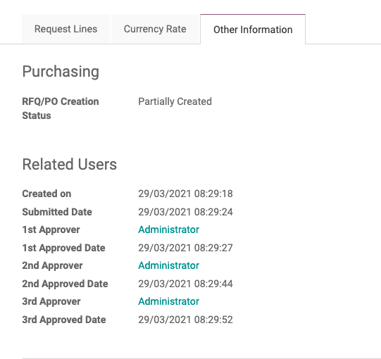
The menu lists all purchase request lines.
The system supports filters, group by to help the purchase user to search for the items to buy quicker and easier:
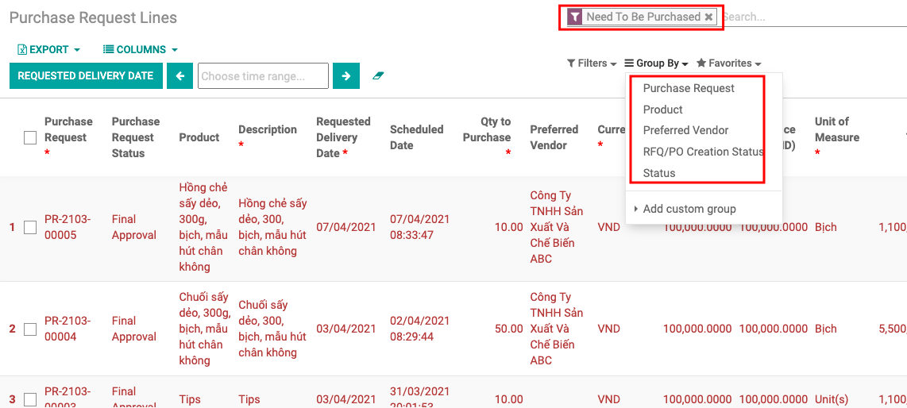
The form view of purchase request lines supports the details of purchase orders created
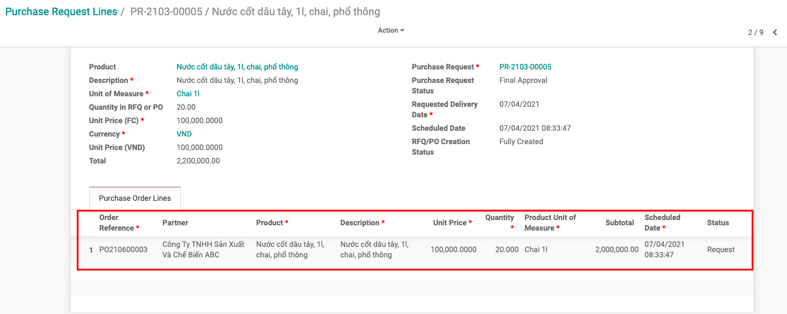
The creation of a purchase request is simple:
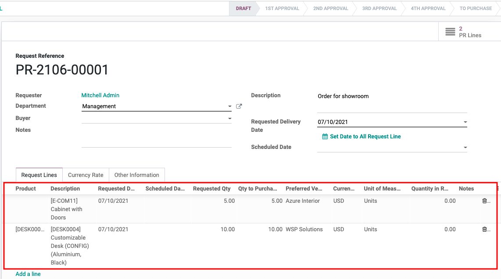
The preferred vendor on each product is suggested automatically by the system based on the purchasing history or the employee can suggest one.
However, when the request is transferred to the purchase user (2nd approval), the purchase user can select an alternative vendor with better price and good delivery date.
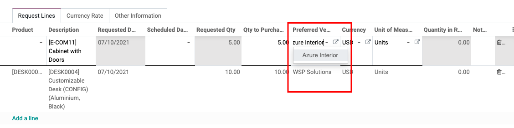
When a purchase request is completely approved, the purchase user can create a purchase order from this request by accessing the purchase request lines through the smart button on the purchase request, then tick all to create draft purchase orders.
The draft purchase orders will be created for each preferred vendor selected on the request lines.
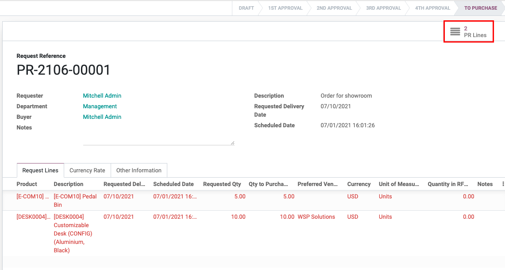
Tick the purchase request lines you want to create purchase orders:
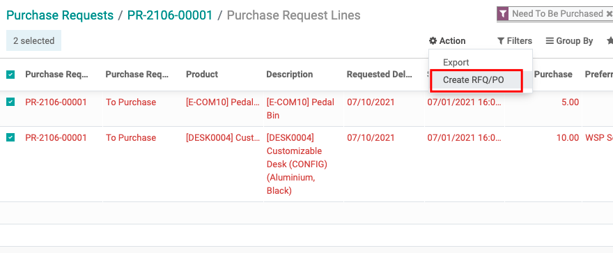
Input the quantity you want to purchase for each product:
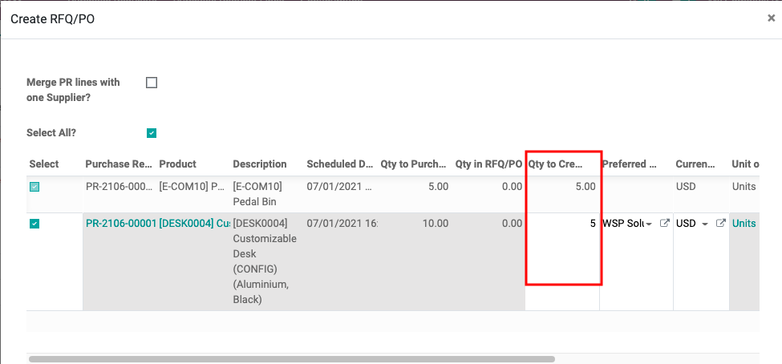
Finally, click on CREATE RFQ/PO
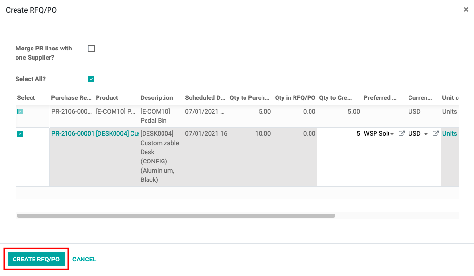
The purchase user accesses the menu Purchase Request Lines, uses the filter Need to be purchased and input the reference of the purchase requests he wants to process.
Then tick on the lines to create draft purchase orders.
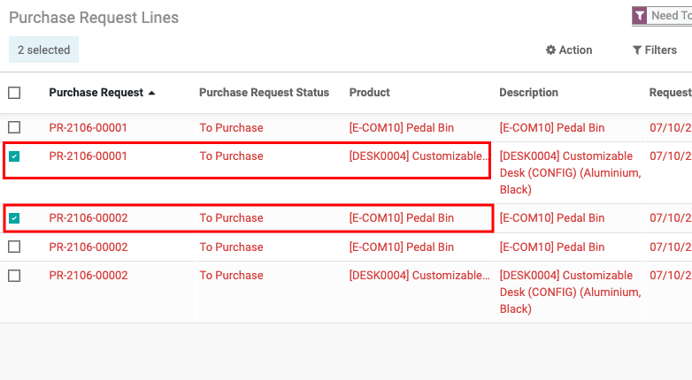
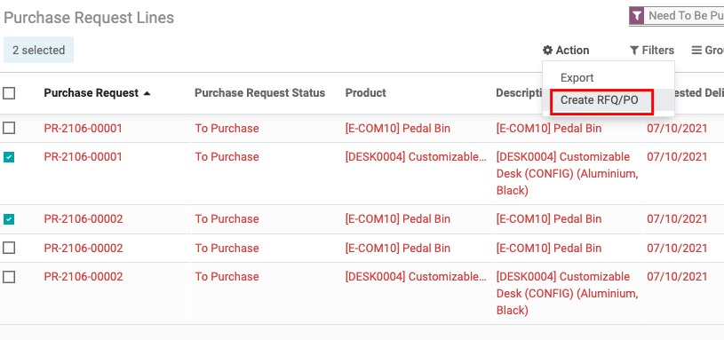
A purchase request is associated with many purchase orders. To support quick access to purchase orders, a smart button on the form view of purchase request is designed to do so.
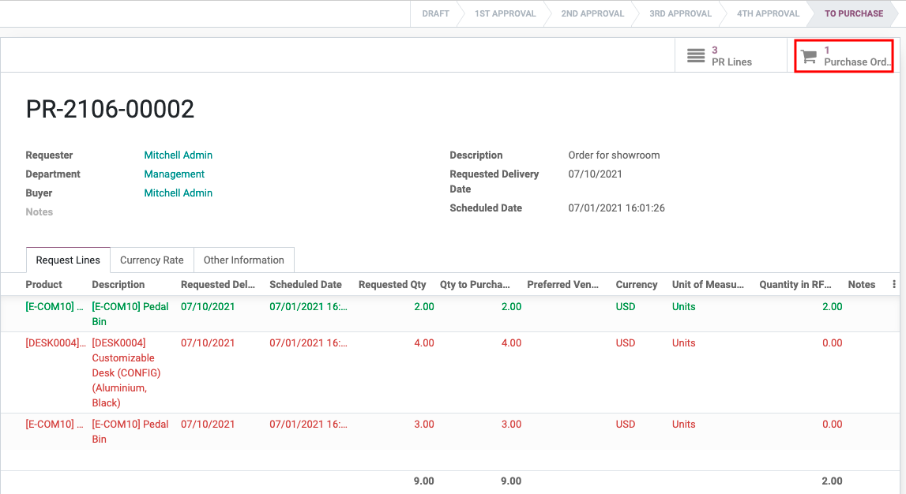
On the other hands, on the purchase order form view, there is also a smart button to get access to the purchase request lines:
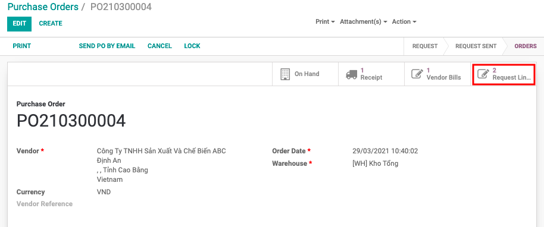